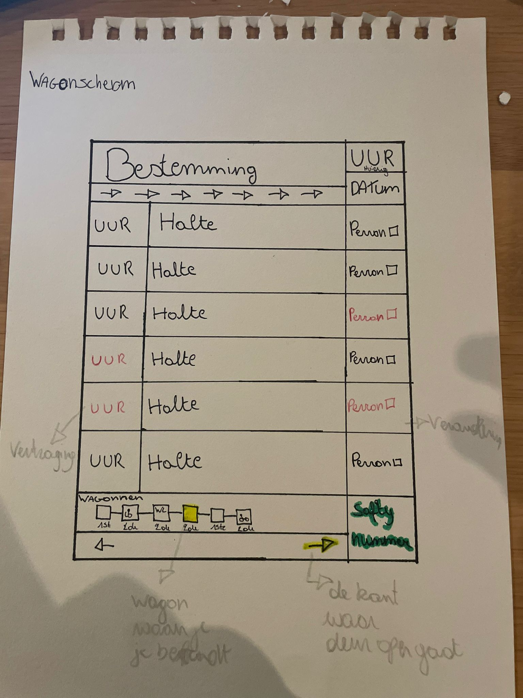

Lesweek 2 – 2de schetsen
Jansen Liene - 1GDM2

Perronscherm
Ik heb de datum toegevoegd bij het huidige uur, omdat dit iets is waar ik zelf vaak naar kijk.
Het deel van de lijn waar de trein zich bevindt is blauw gekleurd, zodat meteen zichtbaar is waar de trein is.
Bij de wagons heb ik eerste en tweede klas toegevoegd, samen met symbolen voor rolstoelgebruikers, fietsers en stille wagons.
Het aankomstuur wordt rood weergegeven bij vertraging en automatisch herberekend.
Bij een onverwachte perronverandering verschijnt dit ook in het rood onder het uur.

Overzichtsscherm
Ook hier wordt het uur rood weergegeven bij vertraging en automatisch herberekend.
Het perron wordt eveneens rood weergegeven in geval van een perronwijziging.

Wagonscherm
Net zoals bij de andere schermen worden vertragingen en perronwijzigingen in het rood weergegeven.
Wagons tonen eerste en tweede klas en symbolen voor rolstoelgebruikers, fietsers en stiltezone.
De wagon waarin je zit is fluo geel gekleurd zodat deze direct opvalt.
Het safety-nummer is groen gekleurd zodat het sneller terug te vinden is.
Pijlen die tonen langs welke kant de deuren openen lichten geel op bij aankomst.